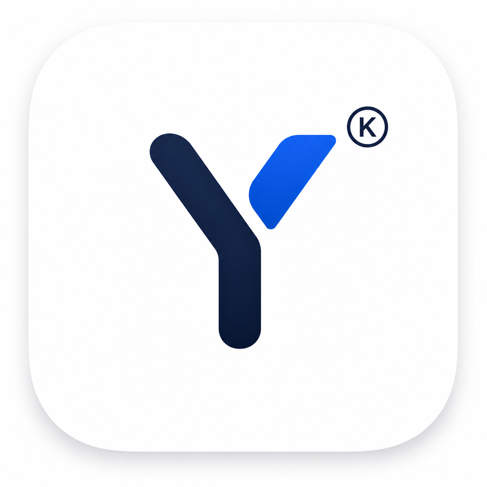

9:41

YiDream
Votre musique, simplement
Votre espace musique
Mode voiture
Qu’est-ce qu’on écoute ?
Bonjour
Vos lecteurs et raccourcis, réunis au même endroit.
Appareil dédié · aucun compte requis

Vos lecteurs et raccourcis, réunis au même endroit.